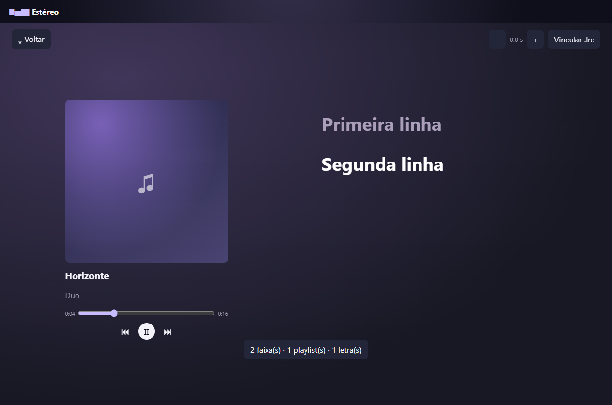

Estéreo
Busque músicas e ouça no player do Estéreo. Organize a fila, salve favoritas e acompanhe letras sincronizadas.
Downloads para Windows e Linux
A reprodução online requer yt-dlp. Os arquivos locais podem ser reproduzidos após a instalação.
